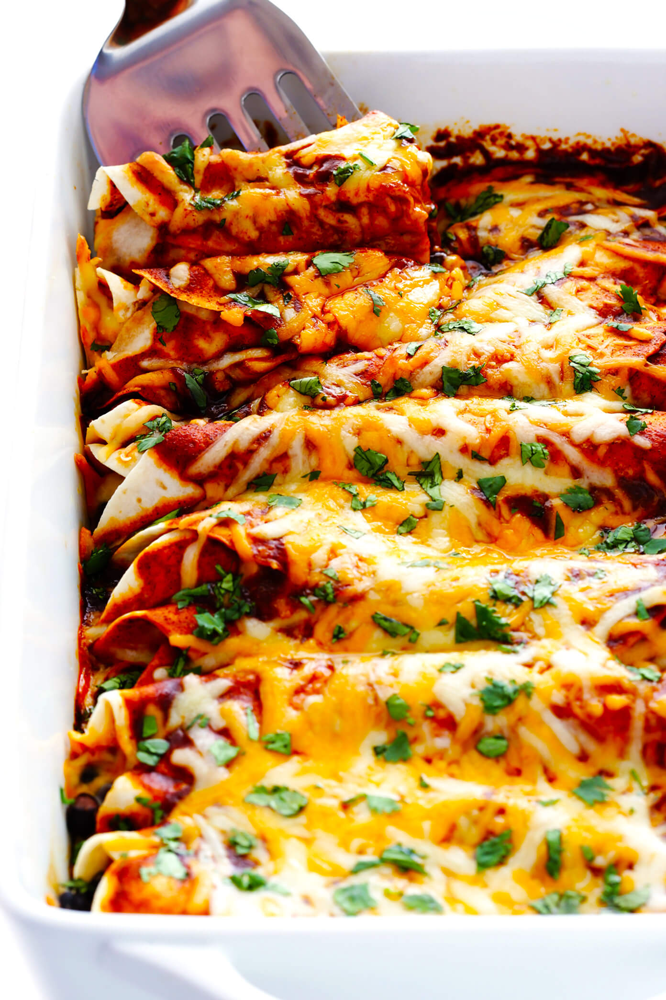

Best Chicken Enchiladas Ever!
My all-time favorite chicken enchilada recipe — easy to make, totally customizable with your favorite fillings, and made with the hands-down best homemade enchilada sauce!

This year will mark the tenth (!!!) anniversary that my favorite chicken enchilada recipe has been hanging out here on the blog. And all of these years later — including dozens and dozens of batches baked up in my own kitchens, thousands more in yours, and literally now millions of pageviews on this little corner of the blog later — I stand by my original title.
These really are the best chicken enchiladas ever!
I was first introduced to the magic of this enchilada recipe by my good friend, Liisa, back when we were living together as roommates in Kansas City. Liisa hailed proudly from New Mexico — and even had a string of chiles hanging from our kitchen ceiling to prove it — and was equally as obsessed as I was with all forms of Mexican food. And once she introduced me to her favorite chicken enchilada recipe, I instantly adopted it as my new favorite as well.
At first glance, these enchiladas are totally typical — just sautéed chicken and onion and green chiles, rolled up with beans and cheese in your choice of tortillas. But the second anyone takes a bite, they come to find that the magic lies completely in this extra-special homemade enchilada sauce. It packs the most delicious, rich and complex flavors that make these enchiladas taste like you’ve been working on them all day. But in reality, this simple sauce only takes a few extra minutes to prep, and it’s made with a handful of everyday ingredients that you probably already have in your pantry.
I memorized this recipe long ago and make it regularly for dinner in our house. (Or for my vegetarian husband, I’ll make this roasted cauliflower version.) And while I’m at it, I usually make a double batch as well to freeze, or to bring to whatever friends might be needing a hand that week. And I can vouch — over the course of a decade, no less — that people go crazy for these enchiladas. I always get requests for the recipe. And I always point people back to this post.
So with Cinco de Mayo just around the corner, I thought it was time to bump this one back to the top of the blog. Because if you’re looking for a killer chicken enchilada recipe to add to your repertoire, this one won’t let you down.
As I mentioned above, this easy chicken enchilada recipe is extremely flexible when it comes to ingredients. So feel free to get creative and customize your chicken enchiladas however you like! In general, you will need:
- Chicken: I typically just use diced boneless skinless chicken breasts. But feel free to use pre-cooked chicken (such as a shredded rotisserie or any leftover baked chicken) if you would like to save time.
- Onion and diced green chiles: Which we will add to the filling for seasoning.
- Beans: Black beans, pinto beans, white beans, or lentils would all work great here.
- Tortillas: Corn tortillas are traditional in enchiladas, but I typically use flour tortillas since they are much easier to roll. Any of your favorite tortillas will work though.
- Cheese: I like to use either Pepper Jack or Mexican-blend shredded cheese for these enchiladas. But cheddar, Monterrey Jack, or other shredded cheeses would also do.
- Toppings: Chopped fresh cilantro, sliced avocado, diced red onion, sour cream, crumbled cotija, or whatever else sounds good! When it comes to enchilada toppings, the more the merrier.
| Prep Time: | 15 min |
|---|---|
| Cook Time: | 45 min |
| Total Time: | 1 hr |
| Yield: | 8 Servings |
Ingredients
- 2 tablespoons avocado oil (or olive oil)
- 1 small white onion, peeled and diced
- 1.5 pounds boneless skinless chicken breasts, diced into small 1/2-inch pieces
- 1 (4-ounce) can diced green chiles
- sea salt and freshly-cracked black pepper
- 1 (15-ounce) can black beans, rinsed and drained
- 8 large flour tortillas
- 3 cups Mexican-blend shredded cheese
- 1 1/2 cups of red enchilada sauce
- optional toppings: fresh cilantro, chopped red onions, diced avocado, avocado, sour cream, and/or crumbled cotija cheese
Instructions
- Preheat oven to 350°F. Prepare (or uncan) your enchilada sauce.
- In large sauté pan, heat oil over medium-high heat. Add onion and sauté for 3 minutes, stirring occasionally. Add diced chicken and green chiles, and season with a generous pinch of salt and pepper. Sauté the mixture for 6-8 minutes, stirring occasionally, or until the chicken is cooked through. Add in the beans and stir until evenly combined. Remove pan from heat and set aside.
- To assemble the enchiladas, set up an assembly line including: tortillas, enchilada sauce, chicken mixture, and cheese. Lay out a tortilla, and spread two tablespoons of sauce over the surface of the tortilla. Add a generous spoonful of the chicken mixture in a line down the center of the tortilla, then sprinkle with 1/3 cup cheese. Roll up tortilla and place in a greased 9 x 13-inch baking dish.
- Assemble the remaining enchiladas. Then spread any remaining sauce evenly over the top of the enchiladas, followed by any extra cheese.
- Bake uncovered for 20 minutes, until the enchiladas are cooked through and the tortillas are slightly crispy on the outside. Remove pan from the oven and serve the enchiladas while they’re nice and warm, garnished with lots of toppings.
- Store any leftovers in a sealed container in the refrigerator for up to 3 days, or freeze for up to 3 months
Enchilada Sauce Recipe
The Best Enchilada Sauce!
Website Created By: Joseph Laucella, Recipe From Gimme Some Oven